Orris
El árbitro que tu convivencia necesita
Por cuestiones económicas, emanciparse solo ha dejado de ser una opción para la mayoría de los jóvenes. Compartir piso se ha vuelto la alternativa por defecto.
Nadie te enseña a convivir y puede desgastar más de lo que parece:
- "Siempre ocupas el baño a la misma hora"
- "¿Cuándo piensas bajar la basura?"
- "Hoy al final no has fregado el comedor"
Aun con una buena organización los roces son inevitables, y sin una buena comunicación no hay bienestar.
Ahí es donde entra Orris. Una app que ayuda a resolver esos roces mediante acuerdos visibles, y que incorpora un asistente de IA para proponer soluciones neutrales cuando se necesita.
INVESTIGACIÓN GENERATIVA
Vimos que era algo muy común
Algunos de mis compañeros ya habían compartido piso, así que el tema nos tocaba de cerca. Lo intuíamos como algo habitual, pero al investigar vimos que en España era un fenómeno masivo y en aumento.
Jóvenes que comparten piso
Jóvenes que viven solos
Fuente: HousingAnywhere, 2025
Detectamos más de un punto de dolor
Hicimos 8 entrevistas para escuchar a quienes vivían la experiencia. A partir de ellas, extrajimos insights y definimos dos perfiles de usuario. Laura buscaba orden y calma, Jorge compañía y ambiente. A pesar de sus diferencias, compartían dos puntos de dolor desde que pensaban en emanciparse hasta que llevaban un tiempo conviviendo: incumplimiento de expectativas en visitas y decepción con el ambiente del hogar.
USER PERSONASCon los datos delante elegimos un camino
Mediante una encuesta de 22 respuestas medimos las frustraciones que había en cada fase del proceso completo. Nos dimos cuenta de que, a partir de la búsqueda de piso, ya les preocupaba si la relación con los compañeros sería buena. Esto nos llevó a orientar el producto hacia la convivencia definitivamente.
Preocupaciones al buscar piso
Tamaño del piso
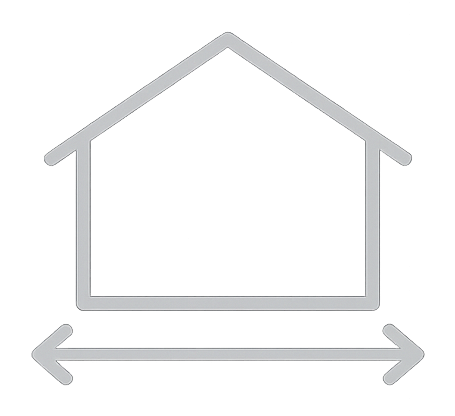
Incertidumbre de convivencia
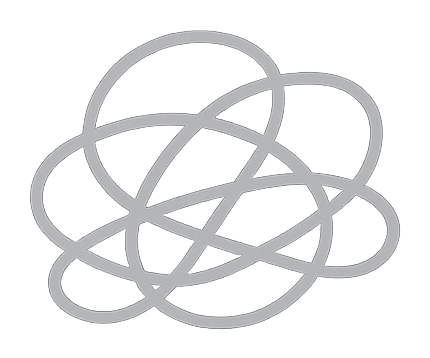
Estado de conservación
ESTRATEGIA DE PRODUCTO
Al principio quisimos abarcarlo todo
Gracias a la investigación, teníamos claro que el producto debía girar en torno a la reducción de roces mediante la comunicación. Sin embargo, añadimos la gestión de gastos y tareas porque sabíamos que buena parte de los roces venían de la desorganización.
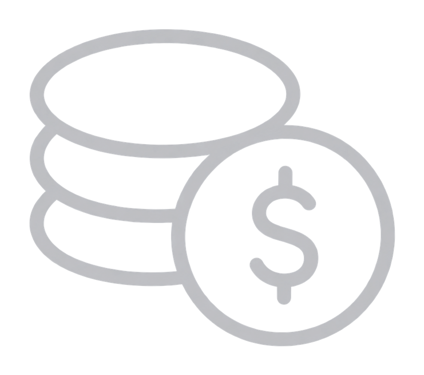
+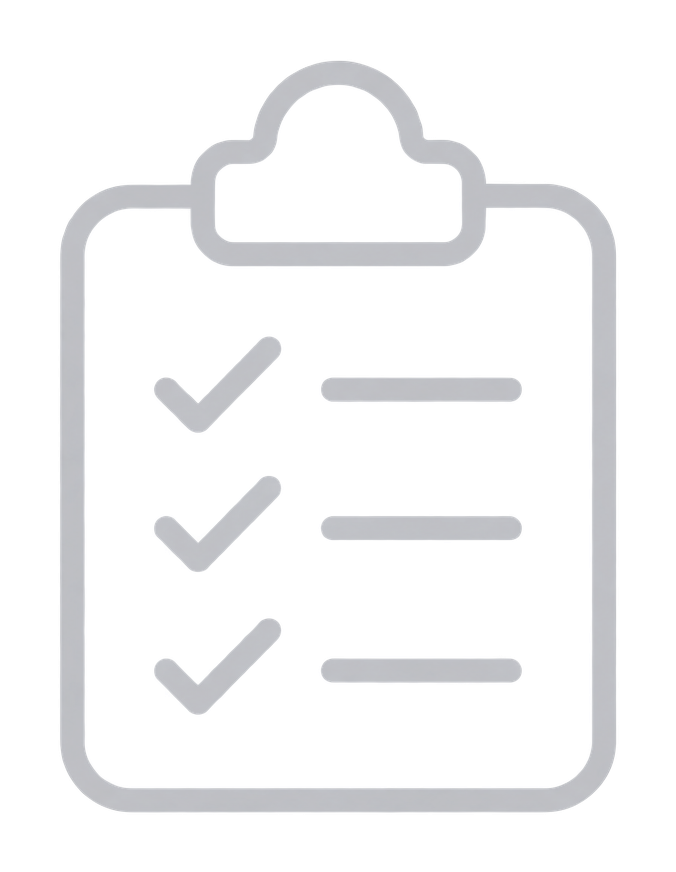
= ¿Solución?Finalmente enfocamos con criterio
Ya había productos como Tricount o Nipto que resolvían bien la parte operativa de un hogar. Además, repasamos bien los datos y vimos que hasta en los pisos más organizados había discusiones. Fue entonces cuando decidimos centrarnos en el verdadero problema: la comunicación. En este punto me encargué de reformular el Lean Canvas y de aterrizar el nuevo User Story Mapping.
UX DESIGN
Pensamos en el corazón del producto
Cada vez que surge un roce se necesita la participación de todos los involucrados para resolverlo. Como sabíamos que cada uno tiene sus horarios, decidimos plantear dos caminos en función de si podían coincidir o no. En este punto me encargué de diseñar ambos flujos.
Nos ocupamos de las posibles limitaciones
Incorporamos un asistente de IA para que los debates siempre fluyan, aunque haya una falta de ideas. Su función es sugerir soluciones neutrales a quien quiere aportar algo, pero no sabe qué.
Definimos la estructura
Dividimos la app en cuatro secciones pensadas para cuidar la convivencia:
- Home: ver las novedades.
- Actividad: ver lo acordado y cerrar lo pendiente.
- Hogar: definir normas comunitarias.
- Perfil: definir preferencias de convivencia.
Contemplamos validar nuestra arquitectura con tree testing y card sorting, pero priorizamos llegar al prototipo dentro del plazo.
BRANDING + UI DESIGN
Orris nació de la idea de comunicar
El nombre vino de Iris, la mensajera de los dioses en la mitología griega. Nuestro mensaje era mejorar la comunicación para mejorar el bienestar, así que nos encajaba.
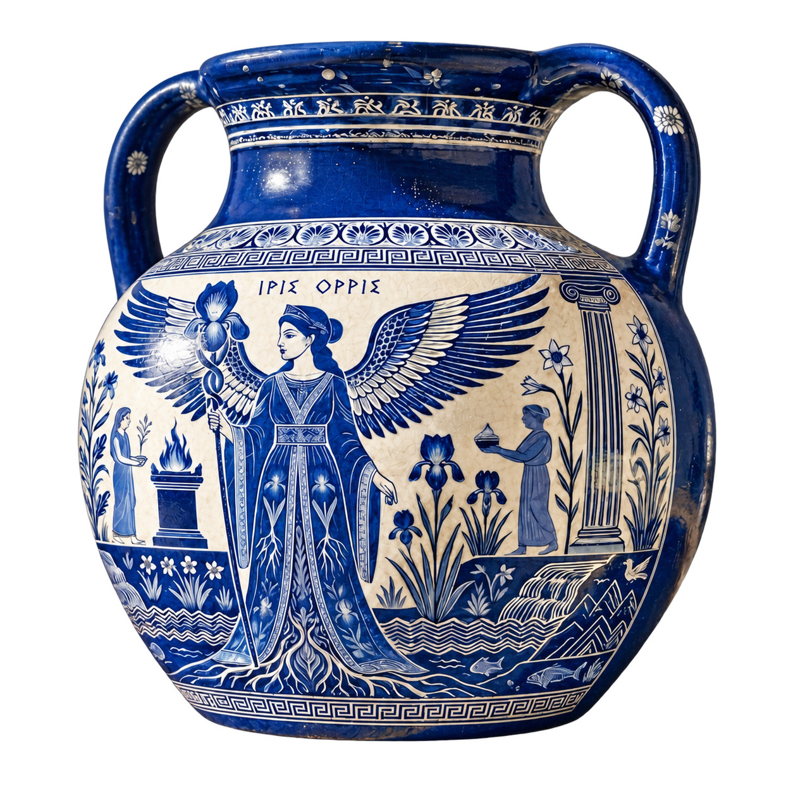
Encontramos nuestra identidad
Nuestro producto tenía el riesgo de transmitir tensión, así que tomamos el camino contrario. Descartamos el rojo pese a encajar en situaciones negativas, y elegimos una paleta de azules y verdes que no alarmasen. Buscamos una tipografía cómodamente legible en momentos de fricción. En este punto cambié la palabra "roce" por "desacuerdo" para que nada se sintiese como un problema.
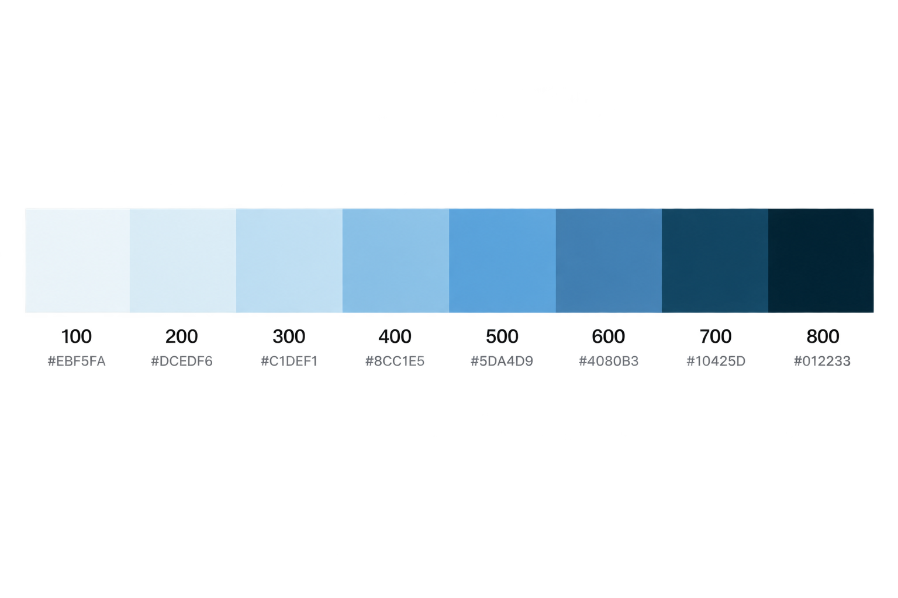
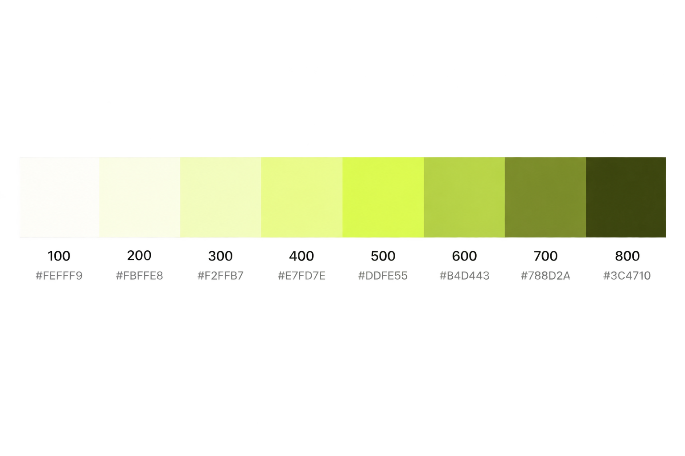
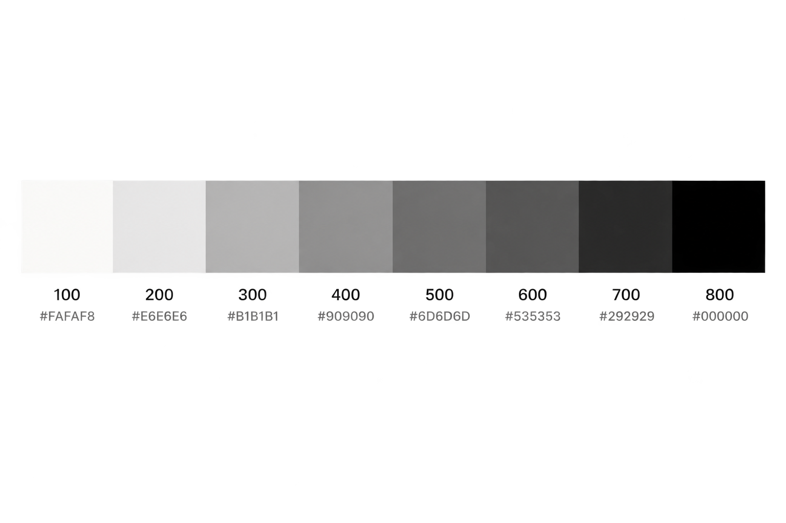
Ideamos la manera de evitar disputas
Pretender que en el 100% de debates quedasen todos contentos no era realista, por eso buscamos la manera más justa de resolverlo. Pensamos en un sistema simple de votación en el que cada persona tiene dos opciones: hacer su propuesta o elegir la del compañero. Cuando todos han marcado la misma, el acuerdo se cierra.


Testeamos y mejoramos lo que no se entendía
Al abrir la app, los usuarios esperaban encontrar los sucesos más recientes. Sin embargo, encontraban accesos directos a diferentes partes del producto que no les decían nada. Mediante un rediseño de la Home, conseguimos ponerles en contexto.

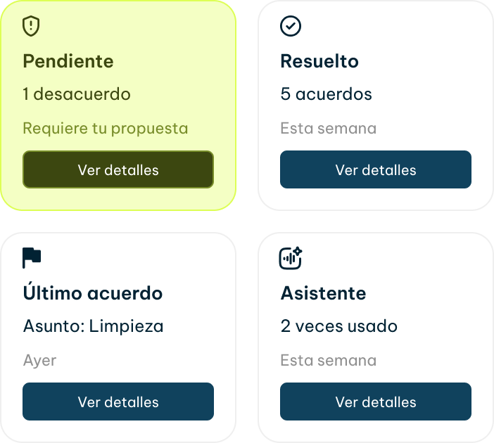
También vimos que se atascaban a la hora de escoger el camino para resolver un desacuerdo. No les quedaba claro lo que pasaría al pulsar cada botón, así que enfocamos el texto a la acción para ayudar al usuario.
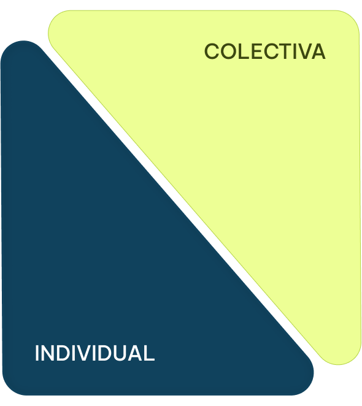
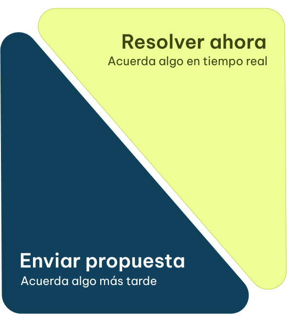
Al fin obtuvimos el resultado
Cada pantalla reúne las decisiones que fuimos tomando para conseguir una interfaz calmada, cercana y pensada para que convivir sea un poco más fácil.


REFLEXIÓN
Lo que me llevo de Orris
Fue mi primer proyecto end-to-end, y me enseñó a conducir un producto por todo el proceso, a pulir su enfoque preocupándome por entender el problema real, y a iterar el diseño escuchando a los usuarios. Más que un resultado, me llevo un aprendizaje.